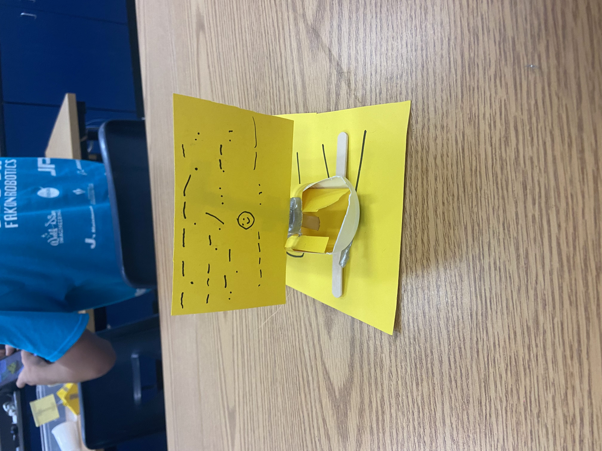

1/19/24 - This is my first journal entry!
in the past week, we've started a new project where we have to make a car. there was a choice between an arduino car and a mousetrap car and i chose the mousetrap one bc mechanical engineering is pretty cool. we also had a quiz which i think i did ok on. we also made oobleck or however its spelled but that was pretty fun.
1/26/24
- This is my second journal entry!this week, we worked a lot on our car project. i didnt get a lot done ngl because i was absent a lot. we just finished the tinkercad though so we are pretty on track.

2/6/23 - This is my second journal entry!
last week, we worked on our mousetrap cars. we got the main design done, but the wheels struggle to spin, which we are planning to fix soon. last weekend, i learned a few new songs on guitar like chandelier by will paquin

2/13/24
- This is my third journal entry!last week, we had to restart our cars because we messed up the first time. the holes on part of our car weren't big enough so the axle could barely spin. we fixed that with our new car though and are almost done. this week, we can probably make the holes a little bit bigger just to be safe and add the rod and string.

2/26/24
- This is my fourth journal entry!when we were redesigning our car, the wheels werent straight enough and it made a curve on the car. we werent able to test our first car because it didnt work, but our second car's furthest length was 29 feet. after our first car, we realized the wheels couldnt spin because they were too close to part of the axle and it would get stuck on part of the cardboard. if we were to make a third car, i would connect the axle to the car in a different way so it could spin easier. id also line up the wheels better so it didn't have a curve.


3/4/24 - This is my fifth journal entry!
for our current project, we are creating protection for an egg so that it can survive a 2 story fall. i dont think our egg will ever hit the ground, since it has straws around it, so i dont think our egg will break too much. the only part im worried about is the fall, since other teams probably have a lot more devoted to slowing the fall, while we put most of our materials into just protecting the egg. this weekend, i went to my lolas and thne lsot 3 runs whle on mithrix and i wanted to cry >:(
3/13/24 - This is my sixth journal entry
our egg drop worked really well and when it hit the ground, you could barely hear it because the fall was so soft. it took a while to open the bag since it was tied really tight but our egg was completely undamaged. this weekend, im hoping ill be able to go to henderson to visit my cousin, but nothing is set in stone. ill probably end up staying home for the majority of spring break (CAD pictures above)
4/5/24 - This is my seventh journal entry
the past 2 weeks we've been working on a small boat that was supposed to travel through 500cm of water. me and isaac couldnt work on it a lot because of reginals but we still did pretty well and got to like 60cm. i think if we made our boat less relient on breaths cause thats where it fell off. i think my favorite project in this class so far was the spaghetti bridge. it was so fun to do and wasn't particularly hard either. my least favorite project was probably the mousetrap car because me and shant couldnt get it to work for the longest time and i got so pissed. this weekend i dont really have plans so ill probably play games or practice guitar.
4/15/24 - This is my eighth journal entry
we started our final project that we're gonna be working on for the rest of the school year. its a boat that has to fit two of our members and im excited for the building of it since we havent started yet. last week we were given 20 post it notes and had to make the largest bridge possible with it. me and my partner got like 13 feet i think but i might be wrong. at the end of the year im excited to test our boat out and finally be done with ms deitchs class.
4/26/24 - This is my ninth journal entry
we kept working on our boat but didnt get much done because we were definitely talking about very important subjects. i think the main problem that our boat is gonna have is holding me and rezas weight cause i dont see how its gonna float with like 260 pounds. i think a lot of boats will also have the same issue though so it isnt the worst problem to have. i think a stereotype people often pair with me is being armenian. i guess i look armenian or something because people always ask if i am but im not.
5/6/24 - This is my ninth journal entry
the past few weeks we've gotten a lot done on our boat. i mean we're technically done with it but we thought itd be better to add reinforcements and such. after doing the math too, we found out it can (probably)(hopefully) hold 2 of us fine. i dunno if i did it right thought cause i feel like i did something wrong. these next few weeks, we're probably just gonna work on reinforcements. we wanna work on the design too but thats not a priority yk. other than all of that our boat seems pretty good. i mean im not really concerned with anything on our boat. im pretty confident we can get across the pool quickly and without sinking. apple juice genuinely sucks ngl like orange juice is so much better. it looks and tastes terrible and i would prefer probably any drink over it. the only use for apple juice is drinking too. like orange juice can be used for smoothies, cooking, and just drinking in general AND it tastes good. apple juice tastes like my grandmas basement.